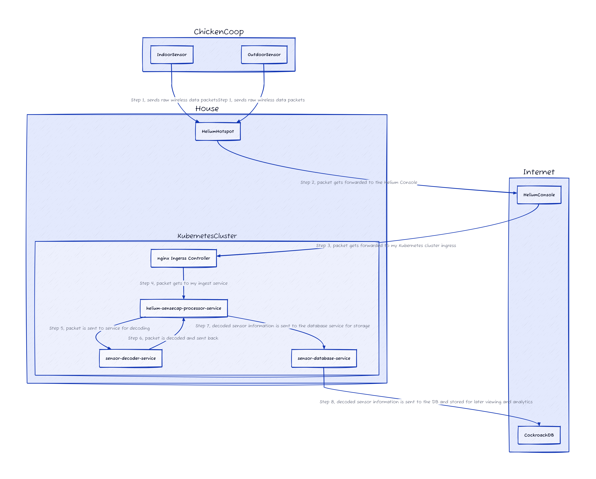
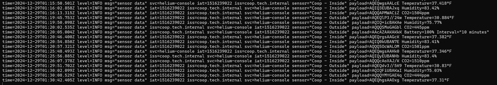
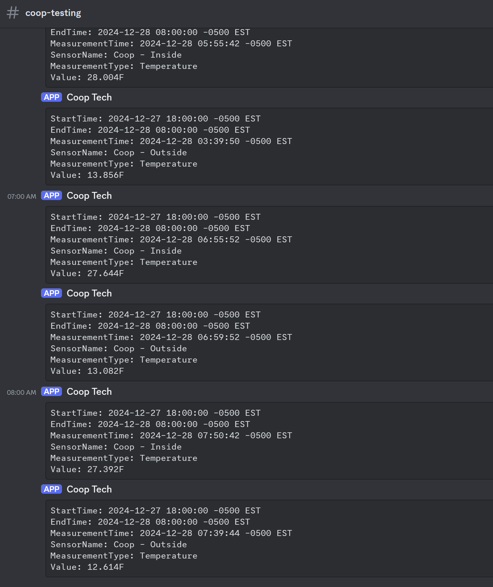
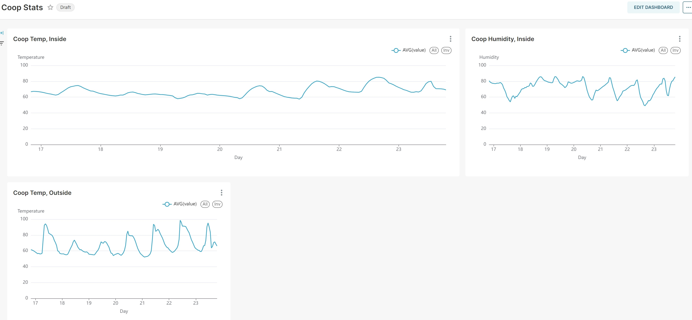

Chicken Coop Update [January 2025]
Overview
This is an update to a blog post I did in January of 2024 titled Chicken Coop Tech1.
I’m behind where I wanted to be in terms of getting this system user-friendly and open source, but I still think I’m making some good progress and wanted to share an update over the changes I’ve made.
Architecture
Components
Hardware:
- Sensecap S210X temp/humidity/co2 sensors - Take readings and sends out LoRaWAN packets
- Helium hotspot - Reads incoming LoRaWAN packets and sends data to the Helium Console
Software:
- Ingest service (helium-sensecap-processor-service) - Takes ingest from the Helium Console
- Decoder service (sensor-decoder-service) - This code was largely ported2 to Golang from JS provided by SenseCAP
- Database service (sensor-database-service) - Takes data received and enters it into a database
Diagram

Where we are
At the time of writing this we’re now at the point we wanted to be at the end of the last chicken update.
We have:
- A service that takes incoming sensor information and acts as the main processor (helium-sensecap-processor-service)
- A service that strictly decodes information and returns the result (sensor-decoder-service)
- A service that strictly takes information and stores it in the database (sensor-database-service)
All services use gRPC for communication, except for the ingest from the Helium Console due to limitations of the legacy system that never got updated to Chirpstack, to compensate for this we run a small gRPC proxy that wasn’t pictured in the diagram above that translates HTTP POST to gRPC. In the future we’ll be migrating off Helium and when that happens we’ll be pure gRPC all the way through.
Monitoring information
Currently monitoring information is a bit scuffed, but it works. While I’m awake I tail the logs from Kubernetes and ooccasionally go outside to change how much ventilation there is based on the information I’m getting.
The inside information updates every 5 minutes, and the outside information updates every 10. When the temperature gets high enough I allow for more ventilation to help drop the humidity, some days where we have full sun hitting the coop I can open the human door and vent 20-30% humidity in 20-30 minutes.

I also run a small service that logs overnight lows in the winter that outputs the lowest temperature into a Discord channel every morning at 6, 7, and 8am. I use this to determine if the water froze, and if so I get up earlier to give them fresh water instead of waiting until I let them out between 8 and 9am.

What about a UI?
I had a working UI in Apache Superset3 earlier this year, however I set it up in Docker for testing instead of putting it on my Kubernetes cluster. While troubleshooting an unrelated issue I purged all my Docker containers and images, and as a result I don’t have a working UI now.
However! The work I did with Apache Superset was extremely easy and I do plan to spin that back up properly in my Kubernetes cluster in the near future.
Here’s a picture from the legacy test system before I mistakenly deleted it.

Future plans
The main goal now is a two part one:
- First I want to multiplex connections coming out of the Helium Hotspot going to the Console so I can send a copy of the data directly to myself.
- Second I want to fully migrate off using the Helium Console when I run out of data credits, since I can’t use this system when the power/internet is out it doesn’t make sense to rely on something on the internet.
I also need to rebuild the Apache Superset UI, and since I got cert-manager setup in a previous blog post4 I’ll also get properly signed TLS certs for the UI when I eventually get it back up.